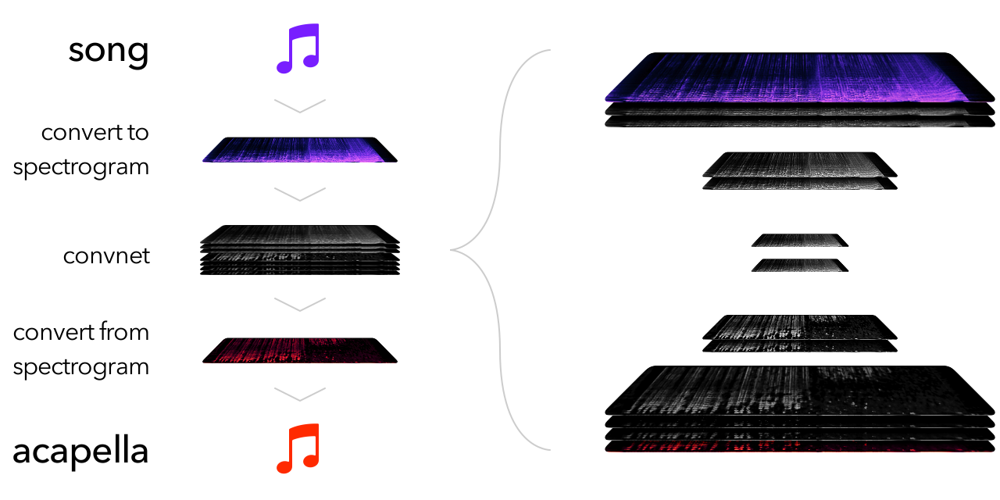

Update: I've started work on an improved version that uses larger context + stereo field information for substantially better results. No code/trained models posted yet, but there's a comparison of performance here (V2 is the new one).
I'm working on a system to extract isolated vocals from music. The code is on GitHub.
Here's an example of what it produces (click on the picture to toggle with the original song):
This post provides a quick overview of the project so far; skip ahead if you want to hear more results!
What's the point?
Acapellass/acapella/a cappella/g for proper spelling are usually a) hard to find or b) nonexistent, but they're essential for making remixes/mashups. Generating acapellas automatically (even if imperfectly) would help a lot of people.
How does it work?
Broadly speaking, like thisOnly showing the conv, input, and output layers:
Since I'm using Keras, the code for the ConvNet in the middle is almost as high-level as the picture above:
mashup = Input(shape=(None, None, 1), name='input') convA = Conv2D(64, 3, activation='relu', padding='same')(mashup) conv = Conv2D(64, 4, strides=2, activation='relu', padding='same', use_bias=False)(convA) conv = BatchNormalization()(conv) convB = Conv2D(64, 3, activation='relu', padding='same')(conv) conv = Conv2D(64, 4, strides=2, activation='relu', padding='same', use_bias=False)(convB) conv = BatchNormalization()(conv) conv = Conv2D(128, 3, activation='relu', padding='same')(conv) conv = Conv2D(128, 3, activation='relu', padding='same', use_bias=False)(conv) conv = BatchNormalization()(conv) conv = UpSampling2D((2, 2))(conv) conv = Concatenate()([conv, convB]) conv = Conv2D(64, 3, activation='relu', padding='same')(conv) conv = Conv2D(64, 3, activation='relu', padding='same', use_bias=False)(conv) conv = BatchNormalization()(conv) conv = UpSampling2D((2, 2))(conv) conv = Concatenate()([conv, convA]) conv = Conv2D(64, 3, activation='relu', padding='same')(conv) conv = Conv2D(64, 3, activation='relu', padding='same')(conv) conv = Conv2D(32, 3, activation='relu', padding='same')(conv) conv = Conv2D(1, 3, activation='relu', padding='same')(conv) acapella = conv
The spectrogram <-> audio portions are handled by librosa.
The training data is dynamically generated by mashing up combinations from a set of acapellas and instrumentals. This is almost as good as finding acapella/song pairs individually, but provides much more data per unit time invested.
The training data I've used in the current model is standardized at a tempo of 128BPM, and contains a mix of male and female vocals.
The model was trained using Adam with mean-squared error loss.
Results
Here's how the current model works on some songs it's never heard before (again, click on the pictures while playing to toggle back and forth with the unfiltered audio). Also note that the model has been trained on 128BPM tracks only (some of these examples are at different tempos). I think that a better model architecture should be able to resolve many of the issues noted below.
The model does very well at filtering out the chords and muted kick from the intro (until 0:42), but only recognizes a few frequencies during the drop (when there are more instruments playing). One model improvement that might help here is adding center-channel isolation as a pre-processing step, since songs usually have vocals in the center and instruments in stereo.
Performance here is similar–the model can identify "high-contrast" vocals fine (until 0:15), but cuts aggressively when there are many instruments playing in the same frequency range.
This song highlights an additional weakness of the model–it often thinks that clicks or snares (for example at 0:45) are vocal sounds. This could potentially be resolved by increasing the receptive field of the network; right now, filtering decisions only take into account local information, but global information (like whether or not other regions in the same timestep got filtered) would be useful!
This song highlights a similar issue to the previous one–in this track, the lowest frequencies of the vocals are almost perfectly pitched, with no vibrato, so the network thinks they're instruments! A larger receptive field may help here as well.
In short, the model does well on cases where local information is sufficient to make a decision (and where vocals are reasonably loud). But real music often includes many more subtle cases, where careful reasoning is required, and the model can't yet handle these.
Areas for Improvement:
I'm still new to working with neural nets (and signal processing), so there are probably many other ways to improve the model besides these. Nevertheless, here are some improvements that I'm hoping to make once I have the chance:
- 'Global' frequency information: I tested several ways to integrate this into the model and found that my implementations improved loss, but did not result in qualitatively better performance. I'm not sure if these issues were a result of overfitting or of a poor choice of loss function, so I've left them out of the main codebase for now.
- A better loss function: I'm using mean-squared error right now, but experiments with stronger models (which decreased validation error substantially but didn't sound any better) suggest that MSE doesn't correlate very well with actual performance.
- Stereo information: right now, the model uses only mono input/output data. Training on stereo (or mid/side) channels might improve the model's ability to differentiate vocals from other notes in the same frequencies.
- Better Time-frequency Transforms: I'm currently using a Short-time Fourier transform (STFT) to process the input data, with 1536-step windows, but it's not clear that this is actually the best choice. Switching to a constant-q transform or a dynamic q transform (as used by AnthemScore) will probably make the model's job easier.
Other suggestions or advice are appreciated (mention on Twitter), and you're welcome to experiment with the code and trained model I've posted.
As a final note, I wouldn't have been able to do any of this without the GTX 1060 GPUs generously made available to students by UW CSE.